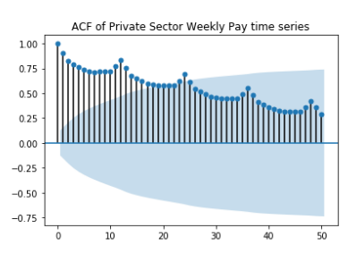
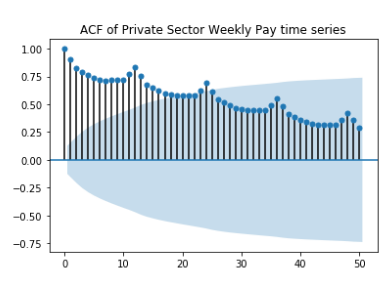

Forecasting The Behaviour of Key Economic Indicators
Problem Brief
In light of the current economic situation, you have been employed as a consultant to prepare a report for an ad hoc Stock Exchange committee, Future Stocks. The report is to forecast the behaviour of a number of key economic indicators until December 2020; the relevant data sets are to be obtained from the UK Government Office for National Statistics website. A recommendation is sought as to whether these economic indicators can be used to forecast the FTSE 100 Financial Times Index itself.
Solution Report (Excerpt)
Forecasting Methods Include: Exponential Smoothing, Holt, Holt-Winters, ARIMA, and Regression Prediction. All graphs and analysis done in Python.
Introduction
Four time series data sets are to each be forecasted 12 months (for the year 2020) using various Exponential Smoothing Methods. Before forecasting any of the time series each will be analysed using Time Series Plots, Seasonal Plots, AutoCorrelation Plots, Moving Averages Plots, and Decomposition if it has seasonality. In one case, the time series will be forecasted using both Exponential Smoothing and ARIMA to understand which method is better.The four time series are then compared to Financial Times Stock Exchange 100 Index to evaluate their relationship before using them to forecast the FTSE 100 Index.
Monthly Average of Private Sector Weekly Pay (K54d)
The time series data for 'Monthly Average of Private Sector Weekly Pay' (K54D) spans 20 years, from 2000 to 2019. It is known that the data is per month, so calendar adjustments are made; the difference between the variance of the earlier and later parts of the time series shrinks. Granted that the mean appears to vary linearly with time, square root and logarithmic transformations are performed to see if there would be any improvement. The square root transformation's histogram seemed to better the variance, so it is kept as an option for forecasting.
Through the various plotting methods described in the introduction K54D can be seen trending upward (ie. pay is increasing). Using both seasonal and auto-correlation plots a seasonality period of 12 months is visible, with pay peaking highest around February/ March. Because the seasonal period is 12 months a 2x12 MA is used for the moving averages graph to gain further insight into the trend. The MA graph shows that while the trend is generally increasing there was a dip during mid 2008 that does not recover until 2010, again increasing but at a slower rate than before 2008, and that seasonality is multiplicative while trend is additive. Comparatively, the time series with the square root transformation looks as though both seasonality and trend may be additive.
Even though the slope of the trend changes about midway though the time series it doesn't seem significant enough to truncate the data. To forecast with known trend and seasonality in K54D Holt- Winter's Exponential Smoothing is used on 1) the original entire time series 2) with calendar adjustments and 3) with calendar adjustments and square root transformation. To understand which was best for forecasting K54D the errors produced between the time series and their predicted versions were compared. The best fit has MSE = 21.91 and used the calendar adjusted data set, trend= additive, seasonal = multiplicative with damping. The other MSE values ranged between 21.99 and 52.39, all the higher MSE values used the original time series. The errors of this model are white noise concluding that it is an appropriate model for forecasting K54D.
ARIMA Modelling of Monthly Average of Private Sector Weekly Pay (K54D)
The analysis of the K54D time series was previously completed- it is not stationary, there isn't white noise— K54D has trend and seasonality. Because of the variation in lengths per month and its implication on variation of the monthly weekly pay the calendar adjusted version of the data is used. To achieve white noise first differencing was applied; unfortunately, seasonality could still be seen within the Auto-Correlation Function plot. Next, seasonal differencing is applied independently of first difference; and was unable to remove local trends from the time series. First and seasonal differencing are combined; this combination eliminated both trends and seasonality to create the needed stationarity.
From the PACF and ACF plots p, d, q, P, D, Q are initialised. Because of first and seasonal differencing d= 1 (first differencing) , and D= 1 (seasonal differencing). The PACF is gradually decaying while the ACF cuts off after the second lag indicating that q = 2 or MA(2). To solve for P and Q the seasonal lags are observed, that is lags 12, 24, 36 and 48. A spike can be seen at lag 12 in the auto-correlation plot and the seasonal lags are decaying in the partial auto-correlation plot; this suggests Q= 1.
Therefore, the first ARIMA model tested is (0,1,2) (0,1,1)12, where 12 represents the number of periods within a season. This model generates an AIC = 1603.205 and Prob(Q) = 0.43 > 0.05 meaning that the residuals are random - white noise. In search of a better model the parameters of p, q, P, Q are each increase by a value of 1; to compare the different ARIMA models the one with the smallest AIC will be selected. An improved combination is found at (0,1,2) (0,1,2) 12; with an AIC = 1594.926 and Prob(Q) = 0.94 (therefore still passing the ljung-box test of residuals having white noise). Another indicator of it being a good model is that the residual errors are white noise and are normal.
Previously, the 'Monthly Average of Private Sector Weekly Pay' data was forecasted using Holt- Winter's Method. To understand if this dataset was better forecasted using Holt-Winter's method or by using ARIMA their mean square errors are compared to one another. The Holt- Winter's Method with damping has an MSE = 21.91 whereas the ARIMA method’s MSE= 34.89. It is clear that using Holt-Winter's Exponential Smoothing produces a better prediction.
To use ARIMA modelling the only requirement of the time series is that it is stationary. Therefore if the time series does not already have stationarity it has to be deconstructs by using differencing to achieve it. This is unlike exponential smoothing methods which can be used to forecast the time series as is (when not stationary) and is used for more specific cases pertaining to trend and seasonality. Secondly, ARIMA has many more parameters one needs to decide on, compared to in Exponential Smoothing. Holt’s Linear Exponential Smoothing method was built to better forecast local trends, and Holt-Winter's Exponential Smoothing to additionally take into consideration multiplicative or additive seasonality, therefore they can be considered subsets of the ARIMA methodology.
Overall, it is obvious that Holt-Winter's Exponential Smoothing is the better option for predicting K54D. The methodology is simpler and the MSE is approximately two-thirds the size of the prediction using ARIMA.
 


The same analysis perfored on K54d was performed on a, b, c. The methodology and written content is repitive therefore it was leftout in respect to the display or range of my skills nothing more is gained if the the 3 sections are included.
Regression Prediction
The time series K54D, EAFV, K226 and JQ2J were used to forecast the Financial Times Stock Exchange 100 Index values for each month in 2020. The five time series were of various lengths, and so they were truncated to all begin in 2000 to 2019. There were also varying ranges of values within each of time series, that is some may be in the hundreds while others were in the thousands. To make these variations more uniformed log and square root transformations were applied and these new datasets were used as options in the analysis and forecasting process.
FTSE has cyclical patterns lasting approximately 8 years, then 4 years. The peaks and troughs in the first 2 cycles are much more aggressive compared to later years. In the latter half of the data the time series is trending upward though there are also declines during this time. There is absolutely no seasonality.
Scatter plots displaying the relationship between each combination of time series and time were created to see if there are any obvious relationship amongst the different time series. FTSE vs K54D are both roughly trending upward over time. FTSE vs K226 has some similarities in the periods where they are both downward trending, and both have an uptick in recent years. FTSE vs EAFV and FTSE vs JQ2J don't seem as if there is any sort of likeness within their relationships.
Using Ordinary Least Square different combinations are tested to understand which may be best for predicting FTSE; in all there were nine combinations- 3 each for the original time series, square root version, and log version. The highest R2 value was found when using the original datasets (K54D, EAFV, K226 and JQ2J), indicator, and time - 53.8% of the variance in FTSE can be predicted by the aforementioned independent variables, and all p-values except for K54D were within 5% significance. When the independent variables excluded time all p-values were with 5% significant value, but the R2 value was a little lower at 53.1%.
K54D was removed from 'K54D + EAFV + K226 + JQ2J + Indicators + time' because of its high p- value, but when this was done the R2 value decreased and K226's p-value now showed insignificance, so it was decided to keep K54D.
Because there was little difference in R2, two previously specified models were forecasted using regression, one with time and one without and their MSE values were compared. When time is included the MSE is smaller than without time (MSE= 462,099.96 vs 471,858.71), so this model is selected to be the better fit. The prediction intervals were calculated at 80% accuracy which produced a value of Ft+1 \(\pm\)870, such a wide interval is not reliable for forecasting. Plotting the error values also shows many local trends and patterns, therefore it is not white noise. Considering how low the R2 value is these results are unsurprising. In conclusion, the independent variables used to forecast FTSE do not provide a good forecast
Conclusion
In summary, there are similar trends throughout all the time series mentioned. Each trend reflected the economic bust in 2008 in its own way. For instance, monthly averages for weekly pay (K54D) range between peak and trough decreased in comparison to previous years, and sales indexes (K226) began to trend downward. TheY all showed recovery around 2014 by change in trend direction or steeper positive trend slopes. Though the forecasting tools used indicate that the models are good fits, it is difficult to know until the forecasted period becomes the present. Lastly, even though all the time series independently predicted potentially useful forecasts, when combined to forecast for the Financial Time Stock Exchange 100 the model didn't produce reliable results and wis not considered a good fit.